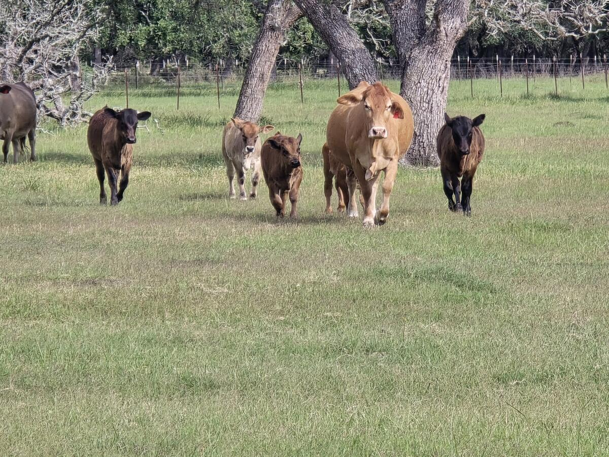
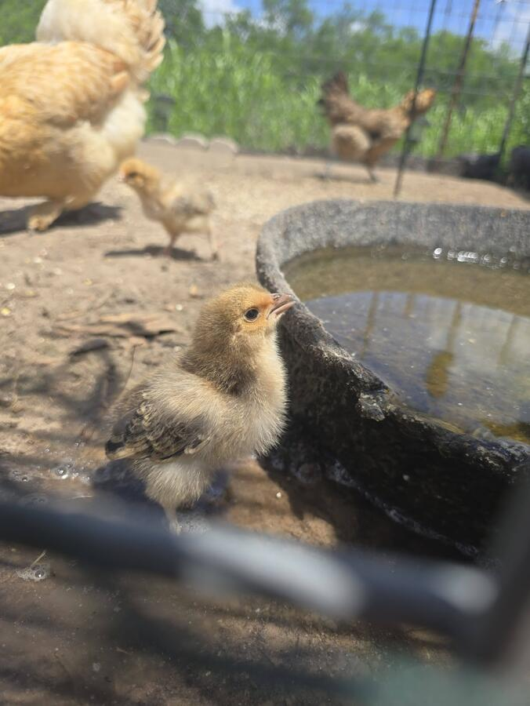
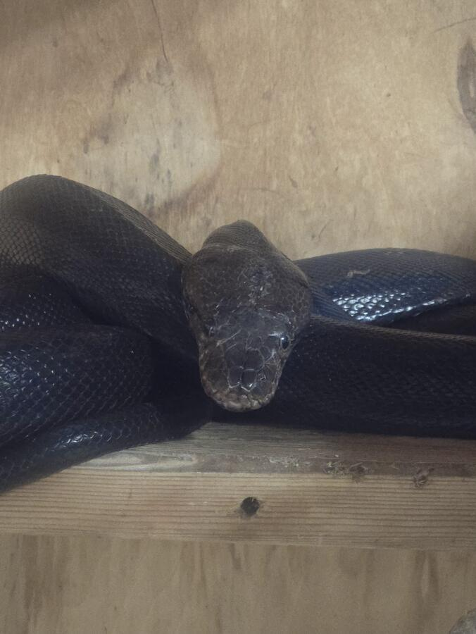
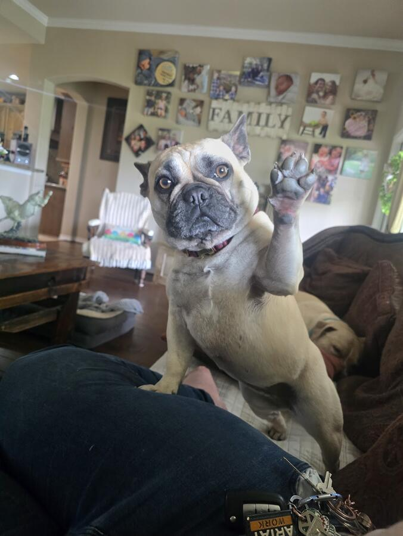
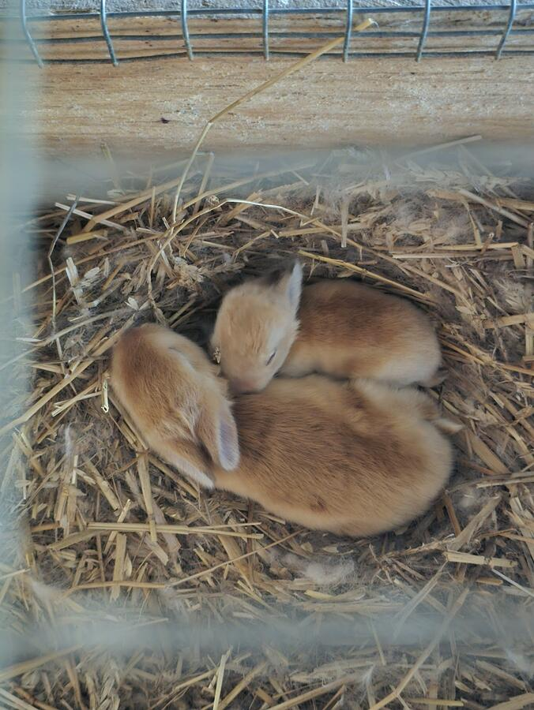
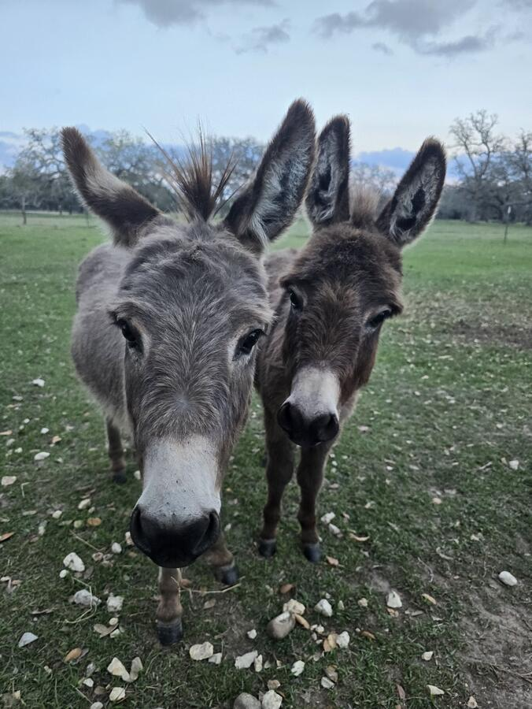
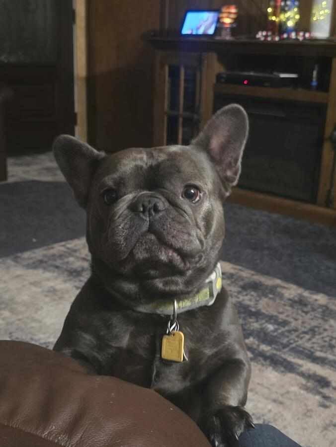

Kate Helps Animals provides professional pet sitting and animal care for the cases most sitters won't take: senior and medically complex pets, exotic species, livestock, and multi-animal households. Based in Edna, Texas, serving Jackson County and surrounding areas.


Aging and disabled animals need consistent, attentive care—not a rushed visit from someone who isn't sure what to watch for. I handle medication administration, mobility assistance, feeding schedules, and the kind of close observation that catches problems before they become emergencies. I know how to read an animal who can't tell you when something's wrong.

If your sitter has ever said "I don't do reptiles" or handed back your bird's care sheet looking confused, you know the problem. I'm VP of Lumpy Lizard Reptile, Exotics, and Poultry Rescue and a licensed wildlife rehabilitation subpermittee. Exotics aren't an afterthought in my practice—they're a specialty.

I'm a barrel racer and horse trainer with decades of experience handling horses under pressure. I've worked cattle on some of the most demanding operations still running in Texas, including swimming herds across the Colorado River mouth—one of the most dangerous cattle drives still active today. I don't spook easily. High-stress moments don't rattle me. Horses, cattle, goats, chickens, ducks, pigs—I grew up in coastal South Texas managing livestock and I know how to work with large animals safely and confidently.

Dogs, cats, and everyday pet care—drop-in visits, walks, overnight stays. Reliable, communicative, and thorough. You'll get updates. You'll get photos. And you'll actually be able to relax.
I'm Kate Byers. I'm a licensed wildlife rehabilitation subpermittee, VP of Lumpy Lizard Reptile, Exotics, and Poultry Rescue, a volunteer with Gulf Coast Wildlife Rescue, a barrel racer, and a horse trainer with deep experience in large animal handling and livestock management. I've been hands-on with animals in coastal South Texas for over thirty years—horses, cattle, wildlife, exotics, and everything in between.
I didn't come to this through a weekend certification course. This is a life built around understanding animals: their health, their behavior, their needs, and when something is off. I've worked cattle on some of the most demanding operations in Texas—including swimming herds across the Colorado River mouth, one of the most dangerous cattle drives still active today. High-stress moments don't rattle me. I stay calm, I stay focused, and I keep your animals safe. When you hire me, you're hiring someone with the background to handle the unexpected without calling you in a panic.
Permitted subpermittee with specialized knowledge in wildlife rescue and rehabilitation, ensuring the highest standards of care.
Active volunteer with established rescue operations, bringing professional-grade expertise and network to every animal in your care.
Three decades of hands-on expertise caring for animals of every type, from exotic reptiles to livestock to beloved family pets.
VP of Lumpy Lizard Reptile/Exotics/Poultry Rescue. Deep expertise in reptiles, poultry, exotics, and complex medical care.
Since 2018, serving farmers, ranchers, and pet owners with consistent, reliable care across a five-county region.
Gentle, patient care for aging animals. Understanding their unique needs and providing comfort and attention every step of the way.
Years of competitive barrel racing and professional horse training experience. Confident handling of equine temperament, behavior, and specialized care needs.
Experienced on some of Texas' most demanding cattle operations, including the Colorado River cattle drive. Remains calm and focused in high-pressure situations.
Every service is uniquely customized to meet your needs and ensure the well-being of your animals.
Daily visits with feeding, walks, enrichment activities, and personalized attention. Your pets stay in their own home where they're most comfortable.
Beyond basic care. Playtime, exercise, mental stimulation, and the companionship animals need while you're away.
24-hour supervision for extended trips. Your animals are monitored, fed, exercised, and cared for around the clock.
Herd checks, feeding, medication administration, emergency response. Trusted by ranch and farm owners across the region.
Medications, basic first aid, monitoring of health issues, and quick coordination with your veterinarian when needed.
Handling the logistics of getting animals to their appointments safely and on time, reducing your stress.
My rates reflect the level of care, expertise, and reliability I bring to every visit. I don't race to the bottom on price, and I don't apologize for that. If you're looking for the cheapest option, I'm probably not your sitter. If you want someone you can actually trust with your animals, let's talk.
Every service is customized. Contact me to discuss your specific animals and needs for an exact quote. These rates reflect the specialized expertise, credentials, and quality of care you're getting. This is not a bargain service. It's professional animal care from someone who actually knows what they're doing.
I strive to maintain everything just as it was before you left, from early morning feedings and walks to the bedtime routines. Your animals stay comfortable and secure.
Stay informed with updates as frequently as you desire, minimizing your worries while you're away. You always know what's happening with your animals.
Every service is customized to suit the specific animal I'm working with, regardless of its species or previous experience. Your animal's well-being comes first.
Yes. Reptiles, birds, and small mammals are a specialty, not an exception. I'm VP of Lumpy Lizard Reptile, Exotics, and Poultry Rescue—this is not new territory for me.
Yes. Oral medications, topical treatments, and monitoring for animals on complex medication schedules. If your pet has specific medical protocols, tell me about them upfront and we'll confirm the fit.
Yes. I'm a barrel racer and horse trainer with years of experience in equine care. I've also worked cattle operations across coastal Texas, including the Colorado River cattle drive—one of the most dangerous and demanding cattle operations still running today. I can handle your horses, cattle, and livestock safely and confidently, whether it's routine care or high-stress situations. I don't panic, and I know what I'm doing.
I handle goats, chickens, ducks, pigs, and mixed farm setups. I grew up working with livestock in coastal South Texas and understand feeding routines, health monitoring, predator management, and the rhythms of keeping a farm running. Reach out to discuss your specific animals and acreage.
I contact you first, always. If there's a medical concern, I know when to call a vet and how to communicate clearly with a clinic. I don't panic, and I don't leave animals unattended in a crisis.
I'm based in Edna and serve Jackson County and surrounding areas. Livestock and farm calls include a mileage component—ask about your specific location.
Contact me by phone or email to start a conversation. I like to understand your animals and your needs before we book, so we both know this is the right fit.
From livestock to exotics to beloved household pets


Tailored care for every hoof, paw, feather, and scale
"We have been using Katie for a few years now to feed our horses, cows, dogs, cats, chickens, goat, pig, rabbit, etc. She is punctual, dependable and great at communicating. Love that she sends me pictures of my furry crew when we are out of town."
"I have used Katie to take care of all my animals. My horse, donkey, pot belly pigs, rabbit, cat, they all love Katie. I have been using her services since 2018, when we first moved to Edna, TX. I trust her emphatically with my fur babies. She is absolutely wonderful with domestic and wild animals."
"Kate takes care of my entire animal rescue and my personal pets when I go out of town. Cats, dogs, lizards, pigs, goats, 14 foot snakes. You name it. She gives them amazing care so I can relax and not worry about my animals the whole time I am gone."
"Kate has been taking care of my fur babies for about six months now. She is absolutely wonderful! I have two senior dogs that require medication and extra attention. She is very careful with them and does whatever she can to make them comfortable. I also have a lab mix male, who has more than tried her! She is so patient with him and even takes him on extra walks! I would recommend her to anyone!"
"She's very friendly and knows what she's talking about."
"Thanks for taking such good care of my dogs and cats and chickens and bunnies and mini cows while we were out of town. She sent me pictures each time she came and we came home to everyone happy. Second time we have used Katie and you should use her too."
"Kate helps my favorite exotic animal rescue when the folks who run it need to be elsewhere. The rescue gets my birthday fundraiser, and donations when I can afford them, and Kate gets my endorsement for being there for them."
"Excellent service, always there to lend a hand. Can be counted on for providing resources to other rescues if she herself can't help. Highly knowledgeable and kind."
"With a beautiful soul and compassionate heart, Katie does wonders for the animals in her care! She knows just what to do to make owners and pets feel at ease while the humans are away. She even takes photos for you! It's the personal touches that make the difference! Your pets will be spoiled with loving hands and yummy treats if left in the care of this lady! I highly recommend her!"
Have you worked with Kate? We'd love to hear your story!
Share Your ExperienceMonday to Friday: 9:00 am to 6:00 pm
Saturday: 9:00 am to 12:00 pm
Closed Sundays
7 days a week, 365 days a year
5:00 am to 11:00 pm, or overnight as needed
New clients: Please provide a 72-hour notice to ensure we're a good fit and to schedule your consultation.
Kate will contact you within 24 hours to confirm your meet and greet.